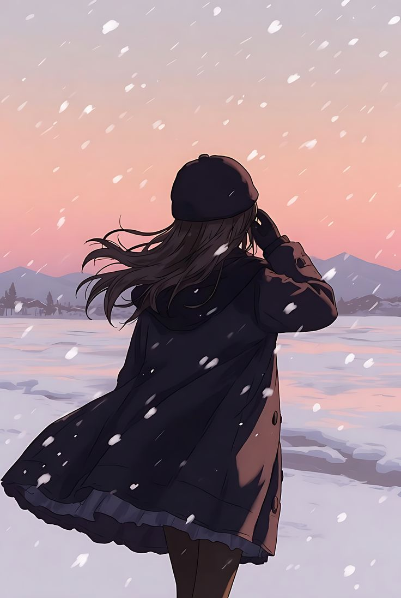

Once upon a time, in a snowy village near the North Pole, lived a girl named Tivi. It was a cold place in temperature but warm in spirit, for its people shared deep bonds. Tivi lived alone, yet never felt lonely—her heart beat for the community she had helped build. Every night after dinner, she wandered up a nearby hill. From there, she gazed down at the golden lights of the village and the frosted trees of the forest. Looking up, she lost herself in the vast night sky—thousands of stars shimmering above the dancing aurora, their light draping the world in beauty. She would count the stars, wondering if they knew the masterpiece they created together. One evening, after sunset, the sky turned completely dark. The aurora’s blues, greens, and oranges never appeared. Tivi sat on her hill, puzzled, the emptiness above echoing in her heart. As she counted the stars, she noticed one was missing—the little one in the northeast. It wasn’t the brightest, but its timid, steady glow had always completed the picture. That star, named Luvi, felt invisible.
Night after night he shone, simply because the other stars did, never knowing if anyone noticed him. That night, he felt especially unseen. So, he let himself fall to Earth—bringing with him the aurora’s colors: Blue, Green, and Orange. They landed deep in the forest. Tivi spotted strange colored lights flickering between the trees and, curious, ventured closer. There, in a clearing, she saw a breathtaking sight: a boy-shaped star doodling in the snow, and three glowing figures—Blue, Green, and Orange—laughing as they tossed snowballs. She hesitated behind a tree, then stepped forward and waved shyly.
“Hi… you’re not from around here, are you?”
The beings froze at first, but soon they relaxed after a short interaction. Despite their differences, they realized they shared the same sky. Tivi invited them home for hot cocoa, and they sat together in her warm living room. The sky-beings looked so happy on Earth that Tivi couldn’t bear the thought of losing them.
“You’re free to stay if you wish,” she said softly. “My home is yours.”
The colors exchanged glances, then Blue shook his head. “We are the soul of the Arctic night sky. Without us, the nights would lose their magic.” Green and Orange nodded in agreement.
Luvi looked at Tivi. “But maybe I could stay? I know I’m meant to shine above, but…”
“What’s wrong?” she asked.
“I’m not important,” Luvi murmured. “No one notices me.”
“Oh, Luvi,” Tivi said, her voice trembling, “I see you. Every night, I count the stars, and I count on you—the little one in the northeast, steady and soft, the one that makes me smile because I see myself in you.” Luvi’s eyes glistened. She embraced him, and when he returned to the sky that night, he no longer felt invisible. He shone—not to impress the world, but to be a quiet ray of hope for the girl who always looked for him. And though they were miles apart, when she lifted her gaze, they were together.
